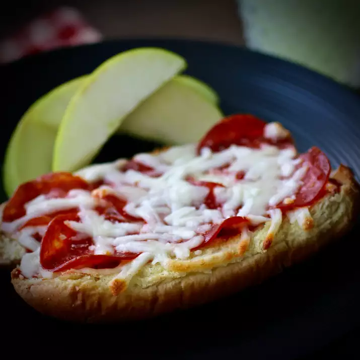

Easy Pizza in a Pinch

Description
Get all the flavor of pizza without the hassle of making or buying pizza dough.
You can split the buns in half along the fold to make appetizer-size portions, or you
can leave the buns whole for mini-pizzas. These come together quickly, a bonus when time is short.
Ingredients
- 8 Ball Park Hot Dog Buns
- 2 cups tomato sauce
- 3 teaspoons garlic granules
- 3 teaspoons dried italian herb blend
- 1 teaspoon sweet paprika
- 1 teaspoon kosher salt
- 1 teaspoon ground black pepper
- 1 pound bulk mild italian sausage
- 2 tablespoons extra virgin olive oil
Directions
- To make the sauce, combine tomato sauce, garlic, 3 teaspoons herbs, paprika, salt and pepper in a sauce pan over medium-high heat.
- When sauce bubbles, reduce to a low simmer and stir. Cover and allow to simmer over very low heat for 15 minutes.
- Crumble Italian sausage in a pan and cook over medium heat until no longer pink, about 15 minutes. Drain over paper towels. Set aside.
- Preheat oven to 400 degrees F.
- Mix olive oil, garlic and 1 teaspoon herb blend in a small bowl.
- Open hot dog buns and arrange on sheet pans covered in foil.
- Separate buns in halves along the folds if you want to make 16 appetizers; leave whole if you want to make 8 pizzas.
- Brush the buns with the olive oil mixture.
- Toast buns in the oven for about 5 minutes, just until edges begin to brown.
- Remove pan from oven and spread each of the buns with the warm tomato sauce.
- Top with browned Italian sausage, pepperoni slices, mozzarella and Parmesan cheeses.
- Return pan to the oven and bake at 400 degrees F for 5 to 10 minutes or until cheeses are bubbling.
- Serve garnished with fresh oregano leaves and crushed red pepper, if desired.